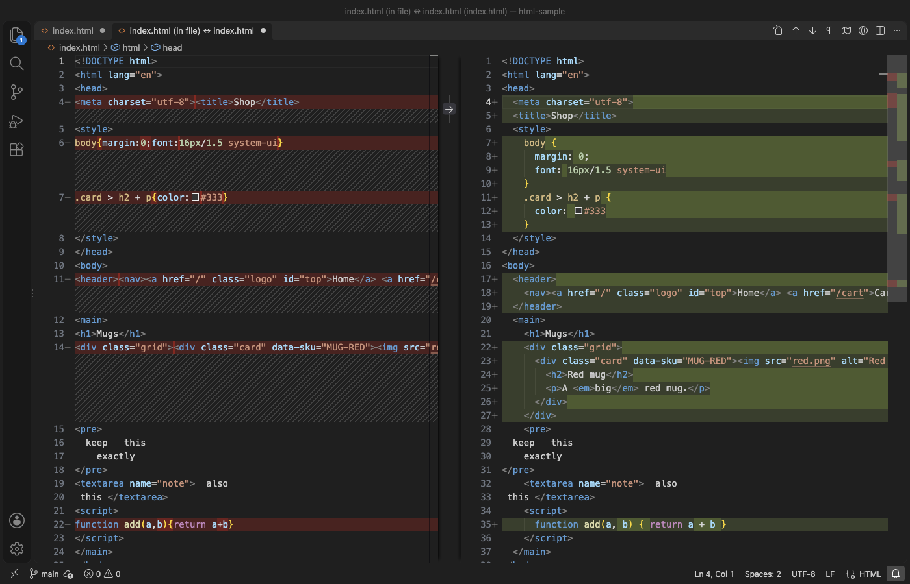

Open files in VS Code and Cursor / Code and APIs
Check HTML files for missing alt text and other accessibility mistakes
Missing alt text, form fields without a label and skipped heading levels are easy to miss in the source and slow to find page by page in a browser. HTML Formatter & CSS Formatter has an HTML Lint Report that reads one HTML file or every HTML file of a folder and lists these problems by file and line, as a Markdown report and in the Problems panel. It needs no browser and no network. The lint report is part of Zovo Pro (USD 19 once), with 3 free tries on your computer, and formatting HTML and CSS stays free.
Free, MIT license. Extension ID zovo.zovo-html-formatter, version 0.1.0. Needs VS Code 1.75.0 or newer.

Steps in VS Code
- Install HTML Formatter & CSS Formatter from the Marketplace, or press Ctrl+P (Cmd+P on macOS) and run
ext install zovo.zovo-html-formatter. - Right-click a folder in the Explorer and pick "Zovo Pro: HTML lint report". Every
.htmland.htmfile in it is checked. Right-click one HTML file to check only that file. - Or right-click in an open HTML file and pick HTML Lint Report (Pro). That checks the open file.
- Read the report. It opens as a Markdown document with the number of files and findings, a table with the count per check, and then each file with the line and a message for every finding.
- Open the Problems panel (Ctrl+Shift+M, or Cmd+Shift+M on macOS). The same findings are listed as warnings from HTML lint, and a click jumps to the line.
- Fix the lines, then run the report again. The warnings of a file disappear when you edit it. Save the report with Save As if you want to keep it.
Where Zovo Pro saves time
Format Document and Format Selection for HTML, CSS, SCSS and LESS, the formatting of style and script blocks inside a page, .editorconfig support and format on save are free, with no sign-in and no network requests. The free formatter does not check accessibility.
Checking alt text by hand means opening every page. The HTML Lint Report runs 12 checks on every page of a folder in one step. It finds images without alt, form fields without a label, duplicate ids, skipped heading levels, more than one h1, links and buttons without text, iframes without a title, pages without lang or title, links with target="_blank" and no rel="noopener", and obsolete tags such as center and font. The other Pro tools are Format Folder with Diff Preview and Minify HTML and CSS.
With HTML Lint Report (Zovo Pro)
- Right-click a folder or an HTML file in the Explorer and pick "Zovo Pro: HTML lint report", or right-click in an open HTML file and pick HTML Lint Report (Pro).
- The report opens as a new Markdown document, and the findings show in the Problems panel.
- A try counts when the report opens, also when it has no findings.
HTML Lint Report works 3 times on your computer before it asks for a license, and a try counts only when you get a result. Opening a file shows no popup and no countdown.
Zovo Pro costs USD 19 once. It is not a subscription, and it turns on the Pro tools in every Zovo extension, not only HTML Formatter & CSS Formatter. After a card payment (Stripe) your license key shows on the next page. In VS Code, run "Zovo Pro: Enter Zovo Pro license key" from the Command Palette and paste it. The key is checked on your computer, with no network call. With GitHub Sponsors, pick the "$19 one time" tier, then run "Zovo Pro: I already paid: unlock with GitHub Sponsors" and sign in with the same GitHub account. With PayPal, send USD 19 with "Zovo Pro" in the note and the key comes by email within a day.
A team of 5: USD 59 once, by card or by PayPal. Every rule and every Pro tool is on the Zovo Pro page.
Steps in Cursor, Windsurf or VSCodium
- Open the Extensions view with Ctrl+Shift+X (Cmd+Shift+X on macOS).
- Search for
zovo.zovo-html-formatterand click Install. Cursor, Windsurf and VSCodium install from Open VSX, where it is published aszovo/zovo-html-formatter. - If your editor has no gallery, download the .vsix from the Open VSX page and run "Extensions: Install from VSIX...".
- Then use it the same way as in VS Code.
What HTML Formatter & CSS Formatter handles
- Images and image buttons without alt. An empty alt="" for a decorative image is accepted, and so are role="presentation" and aria-hidden="true".
- Form fields with no label, aria-label or title. A placeholder does not count as a label.
- Links and buttons with no text, for example a link whose only content is an image without alt.
- Duplicate ids, with the line of the first use.
- Up to 2,000 files per run, set with
zovoHtmlFormat.maxFiles.
What it does not do
- It reads the HTML source and runs no scripts, so content that JavaScript adds is not checked.
- Color contrast, keyboard focus and ARIA roles are not checked. A browser tool such as axe or Lighthouse checks those.
- Only .html and .htm files are checked. Templates such as .vue, .jsx or .php files are not.
- node_modules, .git, dist and vendor folders and .min. files are skipped by default (setting
zovoHtmlFormat.exclude). - The lang and title checks apply only to full pages that have an html tag.
Other options
- axe DevTools. A browser extension by Deque with a free version. It checks the rendered page, color contrast included, one page at a time.
- Lighthouse. Built into Chrome DevTools. Its accessibility audit scores one loaded page.
- HTMLHint. A free HTML linter with a VS Code extension. Its rules include alt-require and id-unique, and it checks a file as you type.
Install counts and Open VSX status were checked on 13 November 2026. Descriptions in quotes are the extensions' own.
Questions
Is alt="" an error?
No. An empty alt marks a decorative image, and the report accepts it. Only an img with no alt attribute at all is listed.
Can I check a whole site at once?
Yes. Right-click the folder that holds the pages. Up to 2,000 HTML files are checked in one run.
Does it change my files?
No. The report only reads the files. It opens as a new document that you can save or close.
Does it work in Cursor or Windsurf?
Yes. Cursor, Windsurf and VSCodium install extensions from Open VSX. Search for the extension in their Extensions view and install it there.
More about HTML Formatter & CSS Formatter
Read the HTML Formatter & CSS Formatter page for every feature and setting, or the source code on GitHub.
Related guides
- Format HTML and CSS in VS Code without breaking pre blocks or inline tags
- Open a SARIF file in VS Code
- Preview a Swagger or OpenAPI file in VS Code
- Preview an HTML file with its CSS and images in VS Code
Zovo Pro and support
Zovo Pro: USD 19 once, every Zovo viewer. It turns on the Pro tools in this extension and in the other Zovo extensions you use. The free features stay free.
After a card payment your license key shows on the next page. Paste it with the command "Zovo Pro: Enter a key".
You can also support the work with no Pro:
Need your format supported?
Open a format request with a sample file, and I reply there whether it can be done. For USD 299 once, through this GitHub Sponsors tier, I add your file format or a missing feature to this extension, with tests, within 7 days.